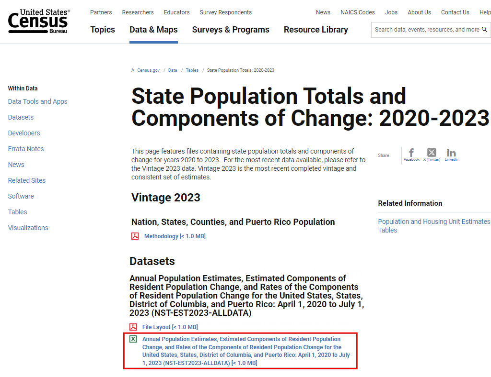
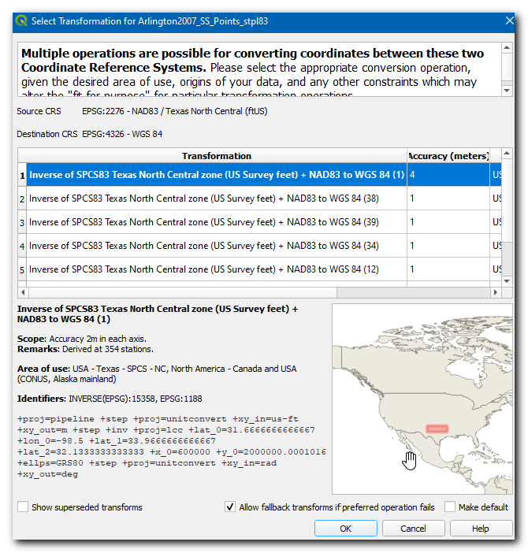
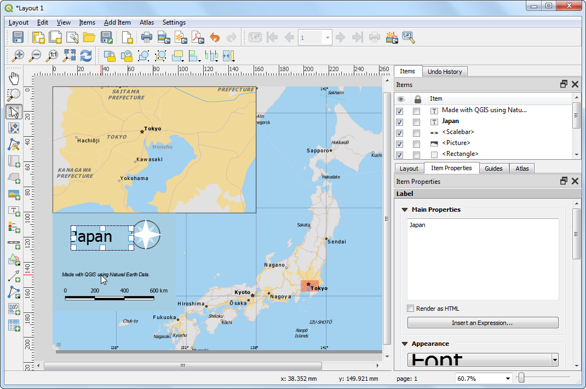
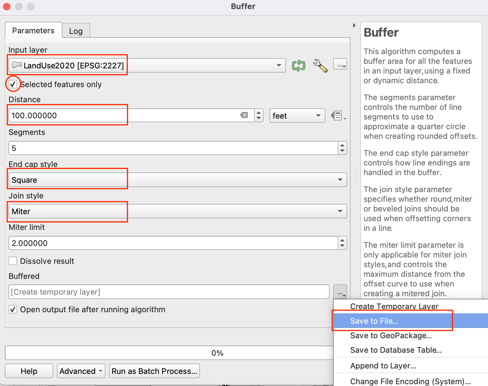

공간 결합 수행 (QGIS3)¶
공간 결합은 공간적 관계에 따라 한 레이어에서 다른 레이어로 속성을 전송하는 전형적인 GIS 문제입니다. QGIS에서 이 기능은 위치 처리 알고리즘별 결합 속성을 통해 사용할 수 있습니다.
작업 개요¶
뉴욕시의 자치구 경계 모양 파일과 뉴욕시의 모든 거리에 대해 거리 포장 등급 파일인 2개의 레이어를 사용합니다. 첫 번째 작업은 계산 알고리즘과 공간 결합을 사용하여 각 자치구의 거리 평균 등급을 찾는 것입니다. 두 번째 작업은 일 대 다수 공간 간의 결합을 통해 거리 객체에 자치구 이름을 추가하는 것입니다.
다른 스킬¶
계산에서 특정 객체를 일시적으로 제외하는 필터 만들기
데이터 가져오기¶
NYC Open Data Portal <https://data.cityofnewyork.us/>`_은 뉴욕시를 위한 훌륭한 무료 데이터 소스입니다.
포털에서 내보내기 옵션을 사용하여 자치구 경계 zip 파일 <https://data.cityofnewyork.us/City-Government/Borough-Boundaries/tqmj-j8zm>`_을 다운로드하십시오.

포털에서 내보내기 옵션을 사용하여 Street Pavement Rating zip 파일<https://data.cityofnewyork.us/Transportation/Street-Pavement-Rating/2cav-chmn>`_ 을 다운로드하십시오.
편의를 위해 아래 링크에서 데이터 세트 사본을 직접 다운로드 할 수 있습니다.
데이터 소스 [CITYOFNY]
과정¶
QGIS 창에서 nybb_19a.zip 파일을 찾아 확장하십시오. nybb_19a / nybb.shp 레이어를 선택하고 캔버스로 이동시킵니다. 이는 뉴욕시의 자치구 경계를 나타내는 다각형 레이어입니다.

다음으로 V_SSS_SEGMENTRATING_1.zip 파일을 찾아 확장하십시오. dot_V_SSS_SEGMENTRATING_1_20190129.shp 레이어를 선택하여 캔버스에 추가하십시오. 이것은 뉴욕시 모든 거리의 선 레이어입니다.

dot_V_SSS_SEGMENTRATING_1_20190129 레이어의 각 객체에서 사용 가능한 속성을 살펴보겠습니다. 마우스 오른쪽 단추를 클릭하고 속성 테이블 열기를 선택하십시오.

거리 선분의 등급을 나타내는 0-10 범위의 값의 Rating_B라는 속성이 표시됩니다. RatingWord 속성에는 서술 등급이 있습니다. Rating_B 필드를 사용하여 평균 등급을 계산할 수 있습니다.

일부 객체가 NR 등급임을 알 수 있는데 이는 평가되지 않은 선분입니다. 분석을 할 때 이것들을 포함할 경우 정확한 분석이 이루어지지 않습니다. 공간 결합을 수행하기 전에 이러한 레코드를 제외하기 위한 필터를 설정하십시오. dot_V_SSS_SEGMENTRATING_1_20190129 레이어를 우클릭하고 Filter를 선택합니다.

쿼리 작성기에서 아래 표현식을 입력하여 NR 등급이 아닌 모든 레코드를 선택합니다. 필드, 연산자와 적절한 값을 선택하여 대화식으로 표현을 작성할 수도 있습니다. 확인을 클릭하십시오.
"RatingWord" != 'NR'
dot_V_SSS_SEGMENTRATING_1_20190129 레이어에 이 필터에 적용된 활성 필터가 있음을 나타내는 아이콘이 있습니다. 이 레이어를 사용하여 공간 결합을 수행할 수 있습니다. 공간 처리 ‣ 툴박스로 이동하십시오.

위치 알고리즘으로 벡터 일반 ‣ 위치에 따라 속성을 결합(요약)을 검색하고 찾습니다. 시작하려면 두 번 클릭하십시오.
위치에 따라 속성을 결합(요약) 다이얼로그의 속성 결합 대화 상자에서 입력 레이어로 nybb를 선택합니다. 거리 레이어 dot_V_SSS_SEGMENTRATING_1_20190129가 결합 레이어가 됩니다. 기하학적 조건을 기본 교차로 둘 수 있습니다. 결합할 필드 옆에 있는 … 아이콘을 클릭합니다.

참고
올바른 입력 및 결합 레이어를 선택하는 데 도움이 되는 팁 : 입력 레이어는 공간 결합의 새로운 속성으로 수정될 레이어입니다. 평균 등급 필드가 자치구 레이어에 추가되어야 하므로 입력 레이어가 됩니다.
Rating_B를 선택하고 확인을 클릭합니다.

마찬가지로 계산할 결합 옆에 있는 … 아이콘을 클릭하십시오.

결합 연산자로 평균을 선택하고 확인을 클릭하십시오. 이제 과정을 시작할 준비가 되었습니다. 실행을 클릭하십시오.

처리 알고리즘은 객체를 통해 작동하고 공간 결합을 적용합니다. 처리 작업이 완료되었는지 확인하고 닫기를 클릭하십시오.

기본 QGIS 창으로 돌아가면 캔버스에 새로운 결합 레이어가 추가된 것을 볼 수 있습니다. 이 레이어의 속성 테이블을 엽니다. 해당 객체와 교차하는 모든 거리의 평균 등급과 함께 입력 자치구 레이어에 Rating_B_mean 열이 추가된 것을 확인할 수 있습니다.

이제 역동작을 수행할 수 있습니다. 때로는 분석에서 공간 관계에 따라 다른 레이어에서 속성을 가져와야하지만 결합의 경우 계산하지 않아도 됩니다. 이러한 분석을 위해 위치 알고리즘별로 결합 속성을 사용할 수 있습니다. 이 작업을 통해 교차하는 자치구 다각형을 기준으로 거리 레이어의 각 객체에 자치구 이름을 추가합니다. 이 알고리즘을 실행하기 전에 dot_V_SSS_SEGMENTRATING_1_20190129 레이어에서 필터를 제거하겠습니다. 필터 아이콘을 클릭하고 쿼리 작성기에서 초기화를 선택합니다. 다음 확인을 클릭하십시오.

레이어 패널에서 결합된 레이어를 켭니다. 공간처리 툴박스에서 위치 알고리즘을 기준으로 벡터 일반 ‣ 위치에 따라 속성을 결합를 찾아 두 번 클릭하여 시작합니다.

입력 레이어로 dot_V_SSS_SEGMENTRATING_1_20190129를 선택하고 결합 레이어로 nybb를 선택하십시오. 기하학적 조건을 기본 교차로 둘 수 있습니다. 추가할 필드 옆에 있는 … 아이콘을 클릭하고 자치구 이름을 선택하십시오. 확인을 클릭하십시오.

선분이 자치구 경계를 가로 지르기 때문에 우리는 결합 유형을 각 위치된 객체에 의한 결합된 별도 객체(일 대 다수)로 선택합니다. 실행을 클릭하십시오.

알고리즘 처리가 완료되면 새로 추가된 결합 레이어의 속성 표를 엽니다. 각 거리의 객체에 새로운 자치구 이름 속성이 추가된 것을 볼 수 있습니다.

If you want to give feedback or share your experience with this tutorial, please comment below. (requires GitHub account)